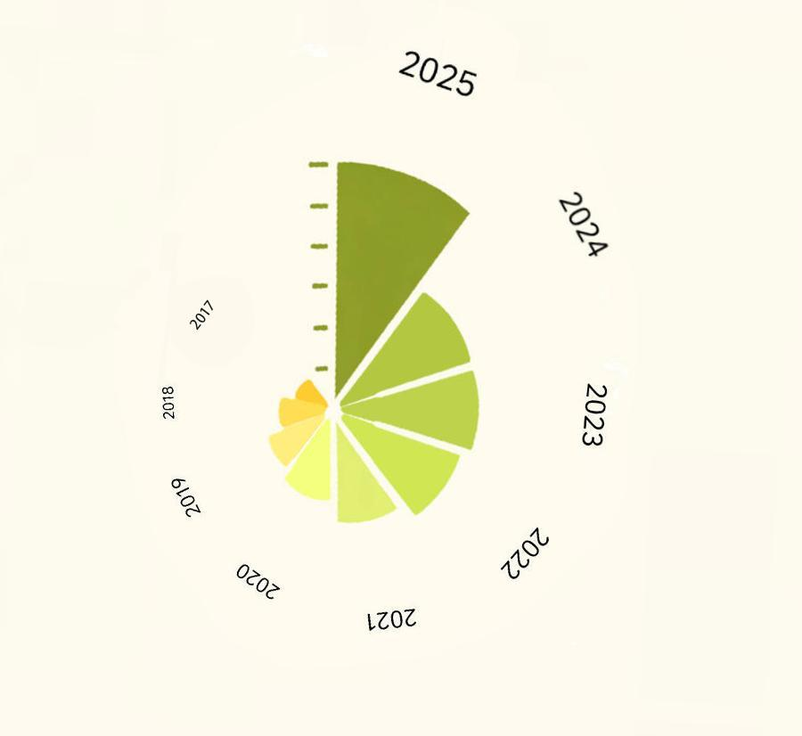

从首批试点时的百万级参保规模，到如今突破3亿人的参保体量，十余年间长护险的参保人群实现了量级跨越。持续向上的参保人数，既是公众对制度认可度的直接印证，也是未来全国推开后制度平稳运行的底气。
制度的完善最终都落到每一个家庭身上，转化为实实在在的经济托举与负担减轻。截至目前，长护险已累计惠及超330万名失能群众，年人均减负约1.2万元，基金支出超千亿元。这笔庞大的支出拆解到每一个家庭，就是压在失能家庭肩头的重担被卸下的真实分量。
长护险参保历年累计人数玫瑰图
悬停和点击查看更多信息

数据来源：国家医保局历年统计公报
这样的减负效果，在每一座试点城市都有具体的注脚。据衢州医保数据，衢州长护险累计惠及失能群众1.2万名，减轻家庭负担7000余万元；江苏镇江市政府揭示，长护险截至2025年底累计为失能家庭减负超7300万元、提供专业护理服务超16.6万人次。从试点初期的谨慎起步，到如今基金收支平稳运行、保障力度稳步提升，长护险基金的每一笔流入与流出，都记录着制度运转的轨迹。
长护险基金2020-2024年收入与支出情况表

每一次服务记录背后都是一个家庭实实在在的喘息，也是民生向好的所指。但制度最动人的地方，往往藏在数据看不见的角落，汪秋华一家的故事正是最好的缩影。
两年前，汪秋华的女儿小雅患病瘫痪，她不得不辞职在家照料，全家五口人仅靠丈夫打工支撑。"大女儿的学费、小儿子的开销、小雅必需的医疗耗材，每笔都要精打细算。"她说。2023年10月，镇江启动长护险制度，为这个家庭送来转机。凭借照顾女儿积累的经验，汪秋华参加了市医保局组织的专业培训，持证上岗。灵活的工作时间和可靠的收入，不仅缓解了家庭经济压力，她学到的专业知识也让女儿得到更科学的照料。
2025年，长护险政策扩面至居民医保人群，经工作人员上门协助评估，小雅如今每月可享受10次专业上门护理，还有每天10元的亲情护理补助。医保部门还允许她成为照顾女儿的护理员之一，彻底解决了工作时牵挂孩子的难题。这份双向奔赴的民生温度，根植于长护险互助共济的制度底色与低费广覆的设计逻辑。
汪秋华不是一个人。这些走上护理岗位的从业者里，有不少人曾经就是失能老人的家属。他们吃过那种苦，知道那些家庭需要什么，于是转身成为照护他人的摆渡者。
国家明确长护险起步阶段费率控制在0.3%左右，浙江执行"低水平、广覆盖"策略，先让制度跑起来，不增加群众明显负担。